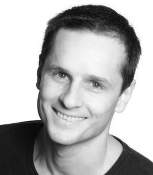
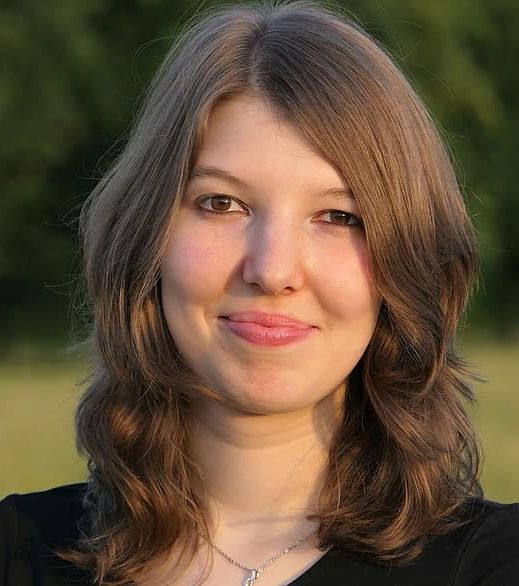

| Óratípus | Hétfő | Kedd | Szerda | Csütört. | Péntek | Szombat |
|---|---|---|---|---|---|---|
| TRX | 9:00-10:00 | 15:00-16:00 | 18:00-19:00 | 10:00-11:00 | 15:00-16:00 | 16:00-17:00 |
| Személyi edzés | 10:00-11:00 | 17:00-18:00 | 19:00-20:00 | 11:00-12:00 | 16:00-17:00 | 15:00-16:00 |
| Dance aerobic | 11:00-12:00 | 16:00-17:00 | 17.00-18:00 | 18:00-19:00 | 17:00-18:00 | 18:00-19:00 |
| Jóga | 12:00-13:00 | 18:00-19:00 | 16.00-17:00 | 17:00-18:00 | 18:00-19:00 | 17:00-18:00 |
Belépéshez kérem adja meg ügyfélazonosító számát és a jelszavát:
Az Ön aktuálisan nyilvántartott adatai:
Saját bérleteim:
Csak érvényes bérleteim
Belépéseim
Csak az utolsó 5 belépésem
RÓLUNK
Egy éve megnyitott edzőtermünkben 800 nm2-en, és non-stop nyitvatartással várunk minden sportolni vágyót. Felkészült edzőinknek köszönhetően az egyéni igényekhez igazodó erősítésre éppúgy lehetőség van, mint a csoportos edzésekre. Mindehhez a napi belépők mellett, 10 alkalomra szóló bérletvásárlási lehetőséget is kínálunk. Edzőink igény esetén életmódbeli tanácsadással, valamint személyre szabott edzésprogramokkal segítenek, amelyhez táplálékkiegészítőket is ajánlani tudnak. A hozzánk látogatókat felkészült ügyfélszolgálatosok fogadják, akik segítik az eligazodást, s az edzések végén regeneráló energiaitalokkal szolgálnak.
A nálunk töltött időt a közel jövőben megnyíló szauna és szolárium teszi majd még kellemesebbé. Hamarosan saját parkolórésszel is bővül létesítményünk.
Edzőtermünk a kerületben élők sportolási lehetőségének bővítése, valamint a rendszeres mozgás népszerűsítése mellett szintén elkötelezte magát. Ennek okán minden kerületi sportrendezvényen résztveszünk, és támogatjuk a "Mozduljunk együtt" tömegsport mozgalmat.
EDZŐINK

Kristóf
Tapasztalt szakedzőként lelkes elkötelezettje a TRX-nek. Óráit minden erősödni vágyó látogatónk örömmel és elégedettséggel veszi.
Laura
Nyolc éve működik személyi edzőként, emellett aktív testépítő, több hazai verseny győztese. Felkészültségét, szakmai tudását sokan méltatják.

Zalán
Képzett táncoktatóként és aerobic szakedzőként kezdte pályáját. Órái mindig vidám hangulatban és pezsdítő ritmusokkal zajlanak.

Orsi
A testi-lelki harmónia elsődleges számára. Az óráit látogatóknak nemcsak belső egyensúlyuk megteremtésében, de életmódbeli tanácsadással is segíteni tud.